LauraBot: AI-Analysis Experiment
The problem to solve
User Researcher is a team sport. Currently our UCD teams manually analyse every interview, workshop, focus group, site visit, etc.
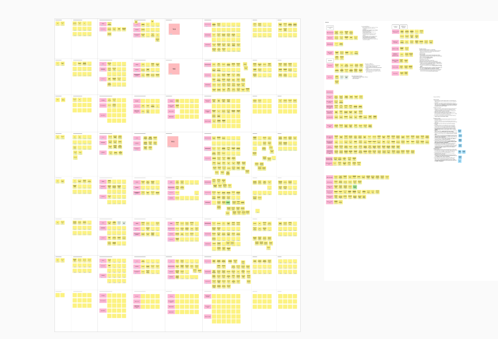
It can take multiple staff, multiple days of notetaking and analysis to get to a finished insight product (slide deck, research report, etc.)
In the 2025 operating context, many teams are reporting that it is unsustainable and they need to find ways to reduce the time spent on research, time analysing and re-analysing interview data.
There are several well-known bespoke platforms that can support with these tasks… we’ve seen more teams requesting access to these.
However these tools often have blockers like:
- steep learning curves,
- taking a long time to implement,
- not meeting our standards (IG, Accessibility, Security),
- or just costing way to much.
The opportunity
This month I’ve been experimenting further with the AI tools we have in house. To see how far we can push along the process of ‘automating’ researcher notes and transcription analysis.
Many colleague are skeptical. Rightly so. This is a time consuming and complex task doing it manually.
With all the quality checks we conduct, how can an AI tool possibly to this?
Here are some of the user needs that were identified:
- As a researcher, I need to anonymise and store transcripts, so these can be used for analysis and reporting
- As a researcher, I need to tag quotes within transcripts, so that these can be included in the final report
- As a researcher, I need to manage and search tags across all projects, so that I can see trends and track changes over time
- As a researcher, I need to link quotes and tags to video clips, so that I can shows video of usability issues or insights to our team
- As a research ops team, I need to store participant records, so these can be tracked for auditing purposes
Lets build the thing
LauraBot, nicknamed after Laura in our team. Laura conducts top quality research and has been helping to evaluate our AI tools.
For this experiment, we used the secure MS Environments (Azure AI Builder, PowerAutomate and Dataverse). We descoped video and audio editing for now and focus on text-based transcripts.
The goal was to test summarisation of multiple research interviews (transcripts) and understand:
- Whether out of the box tools work?
- How much customisation is required?
- Is it a 1-step proces, or does it need multiple stages?
- Can we store the structured data for reference? (e.g. a quotes library?)
- How is this better than Copilot chat?
- Is it a scalable solution?
Note on information governance and environment dependencies
Before we talk about the implementation, a concern that our researchers have is, can we use this tool? We’ve been told not to upload Personal Data or any transcripts into any AI tools yet!
I spent hours looking into the Microsoft Term & Conditions for Copilot, Power Platform and other MS AI Tools. The data is being processed inside the NHS tenant. It doesn’t get stored by MS for training their LLMs.
So whether you are using Copilot in Word/Excel, ClipChamp or Copilot Studio - it all work in the same way. If you ask data to be summarised, or if data is automatically summarised (MS Word, MS Teams, ClipChamp), our data is secure and not being stored by Microsoft for training purposes.
With Dataverse & PowerAutomate a third-party team manage environments: we have to assume permissions are set correctly by admins, and only necessary staff have the Role-Based-Access enabled to our research data.
Dummy transcript data was used for for first experiment, this data was generated by Copilot and ChatGPT. In a later round of testing, moderator notes from actual interviews were used; the participants data was already anonymised before processing.
Summary of end-to-end Workflow
- Upload folder with transcripts
- Categorise participant data
- Anonymise transcipt
- Summarise transcript
- Extract quotes and tag
- Build report
1. Upload folder with transcripts
As most of the researchers won’t (currently) have premium Automate or Copilot, during the experiment, this is run through Sharepoint folder.
- A researcher uploads a folder with completed transcripts for analysis,
- A project is then created in Dataverse,
- Each transcript is converted from docs into data.
The main challenge here was identifying the folder, then looping through all the files, and saving it into Dataverse, linking our Project to multiple Interviews, using nested tables.
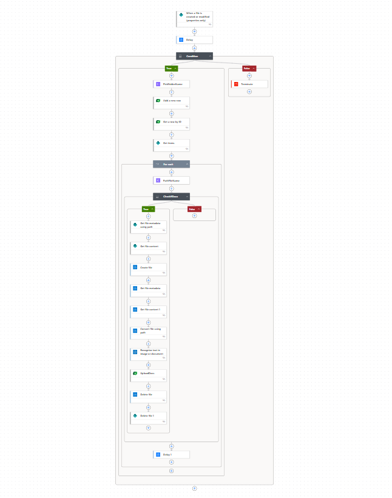
2. Categorise participant data
Next I created a workflow and new prompt to summarise the transcript, as well as categories a collection of data.
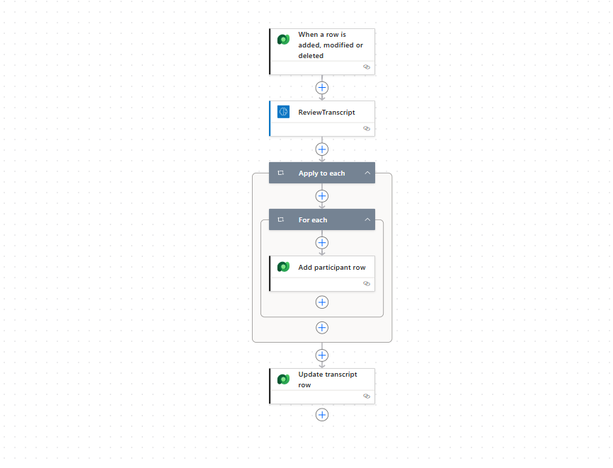
This included:
- a summary of the research session - date, time, moderator names
- details for each participant, including categorising: protected characteristics, personal identifiable data
- creation of unique participant numbers
The biggest challenges were:
- it took many many iterations to find a way to tag the wide varierty of data within a single prompt. It took a lot of research and persistence to get this to work.
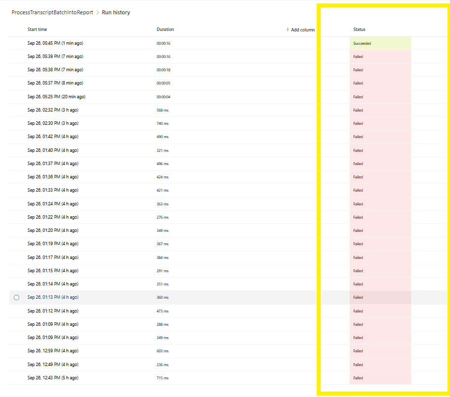
- adding a status column to detect new transcripts, then change status after the workflow is completed
- returning outputs in a suitable json format
- categorising data correctly in json results, so they could be stored in category datatype fields
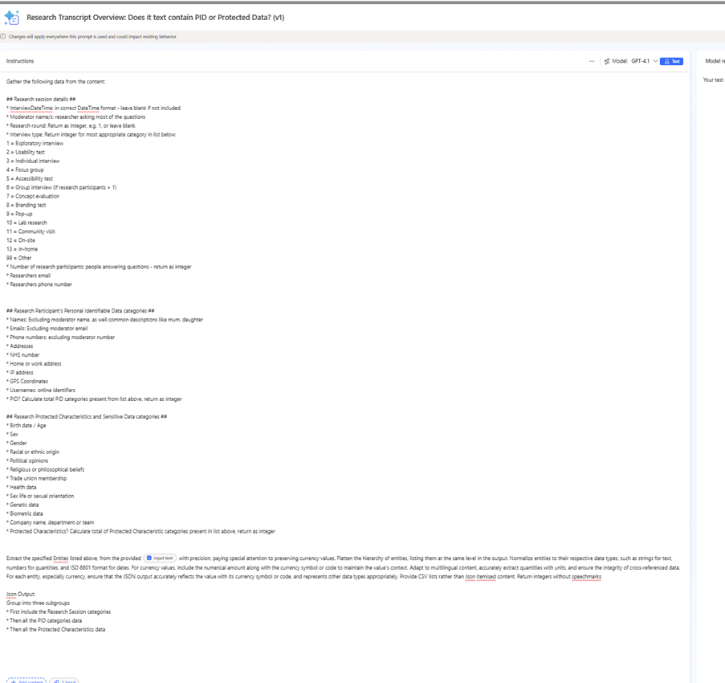
Another useful tip is to calculate the highest participant number, using the Dataverse participant table, then generating new participant numbers ensuring there is no duplications.
In summary, it was possible to catalogue all the Personal Identifiable Data in the transcript and store this directly within the Dataverse environment.
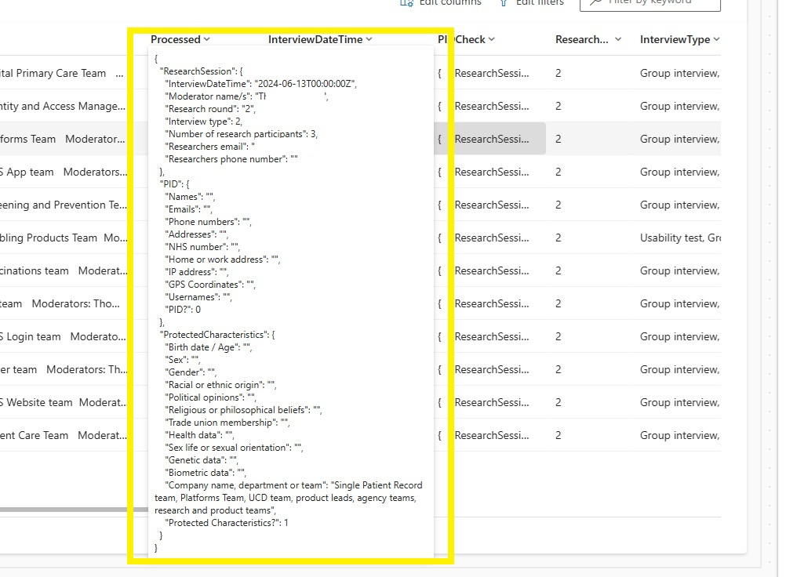
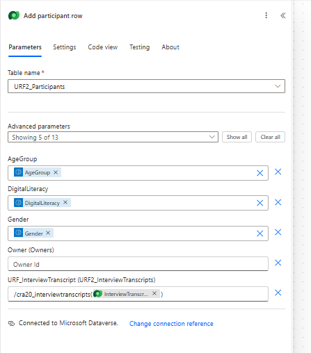
Note: need to be careful linking interviews to the correct project record using the Logical Name & Schema Name (not to be confused!)
3. Anonymise transcipt
After identifying PID data, I wanted to ensure all of this was removed ahead of creating any tags or report summaries.
I updated the previous workflow to include a fully-anonymised transcript appended within the json data result
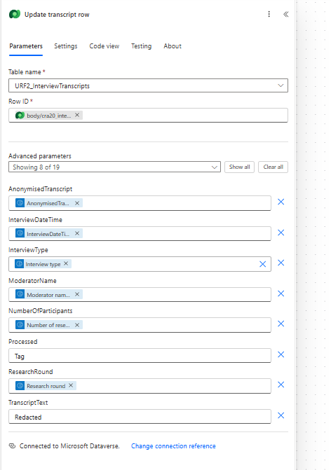
Then within Dataverse, the original transcript (with PID) is removed, and the anonymous transcript added to a new field
The Processed status also updated to reflect that it is done and was ready for next stage.
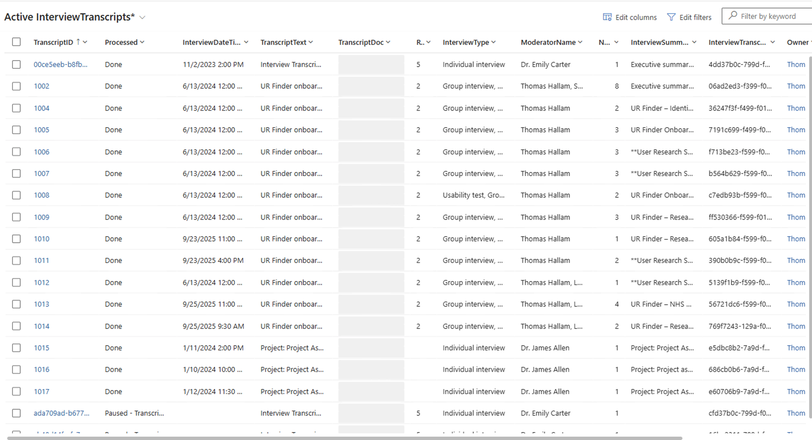
4. Summarise transcript
After anonymising the transcript, a separate Prompt was uses to create a summary for each transcript. This included: high level findings, usability issues, demographic insights, recommendations.
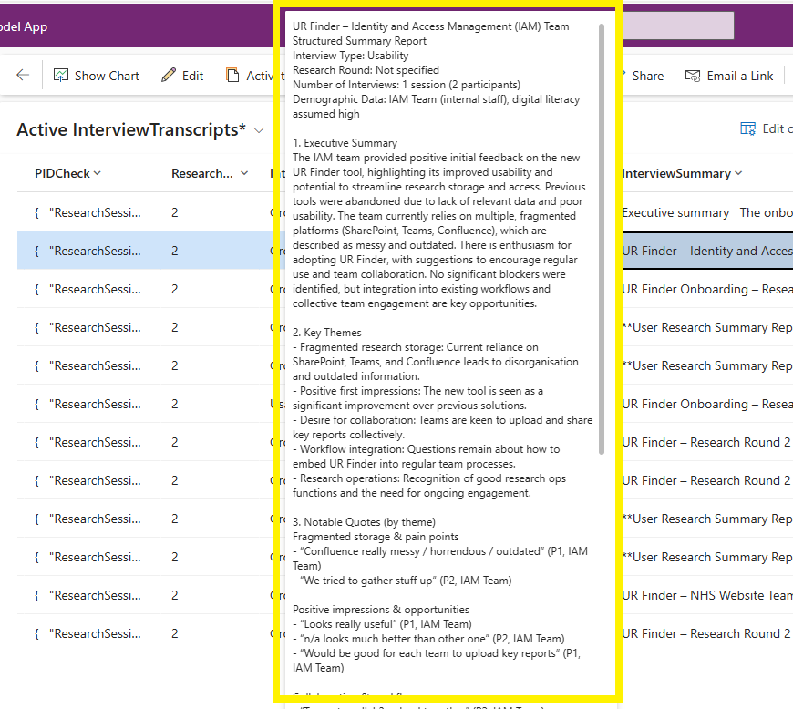
This step may or may not be required, but I wanted to experiment whether the final report was more accurate with or without previously summarised individual transcipts.
Another question that keeps coming up… is how much does this AI cost to use? By splitting the activity into many prompts and steps, we have more control of how AI processes data, but are using a lot of “AI Builder Credits”.
We’ll need to experiment further with how does this compare to running the same activity within Copilot? and who picks up the cost for using either of these solutions?
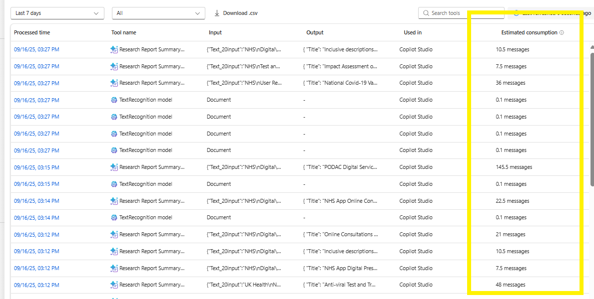
5. Extract quotes and tag
I did test sending the Summarised results directly to a final prompt and asking for a Final Report summary. The results were quite good, but there wasn’t any way to tell how the AI had decided to categories the data in doing this. It also meant that one of the key requirements a ‘tag library’ would be missing.
To address this, I added an additional stag into the workflow to look through each anonymised transcript, consider each sentence from the participant, whether it was sufficient to be classed as a ‘quote’. Then to categories it.
This inclduded a sentiment score / whether it was a Positive comment, Pain Point, Idea, or User need. The workflow would loop through every quote and add them to the dataverse table, linked back to the participant ID and also the Interview.
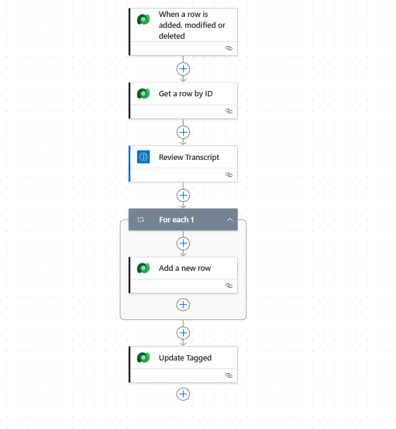
This took much trial and error, but in principle it worked.
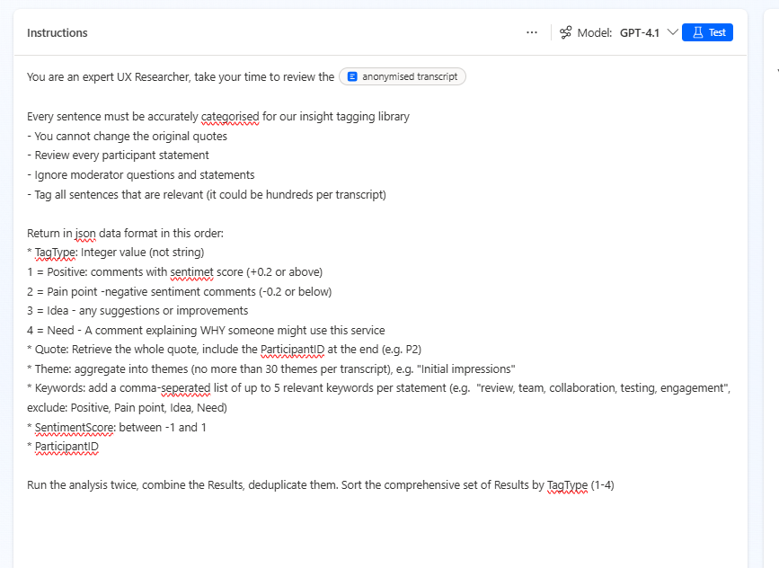
As this was only an experiment, I didn’t spent too long reviewing the accuracy of the tagging process, it does need some iteration and feedback.
There are lots of opportunities here.
It would be possible to build a front end for the tag library, or to export all the tags to a spreadsheet, or upload all the tags to a Sharepoint List, instead of having them just within the Dataverse backend.
If the tagging was refined and super-accurate… dare I say you could automate the final report as well when all the tags have been created.
6. Build report
Finally (and this was by far the most challenging bit),
I created a workflow that checks when all a ‘CreateReport’ status (is added) in the dataverse project column.
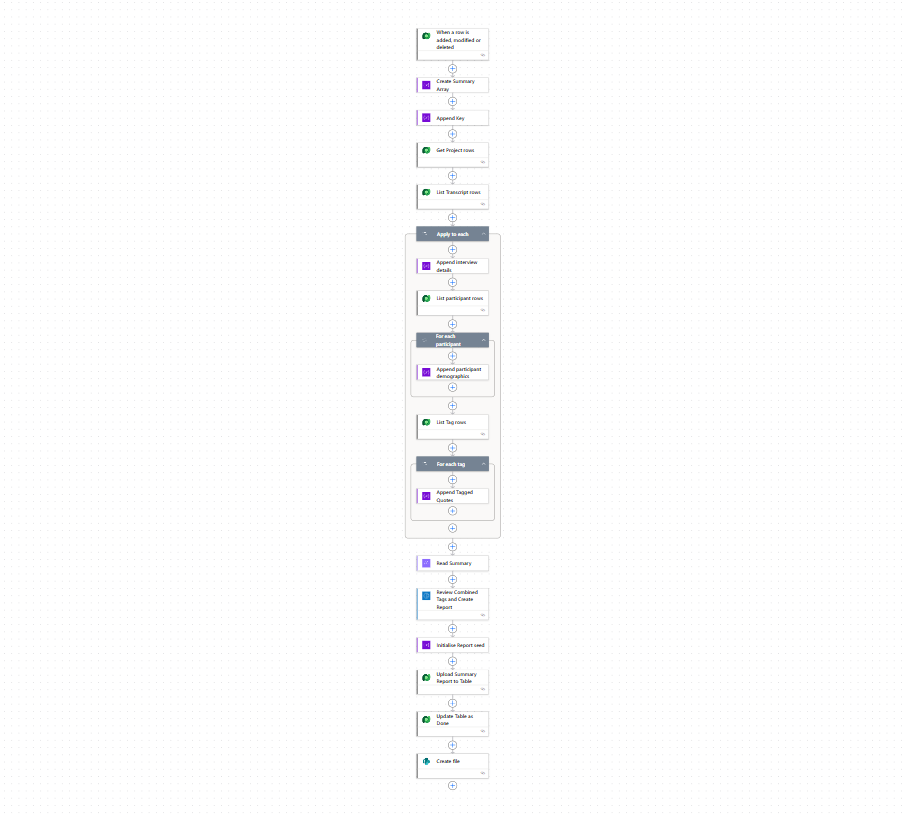
This workflow then aggregates all the thematic quotes, sentiment scores, participant numbers, participant demographics, anonymised interview summaries for all interviews in the project.
This is sent as a single text blob into the prompt:
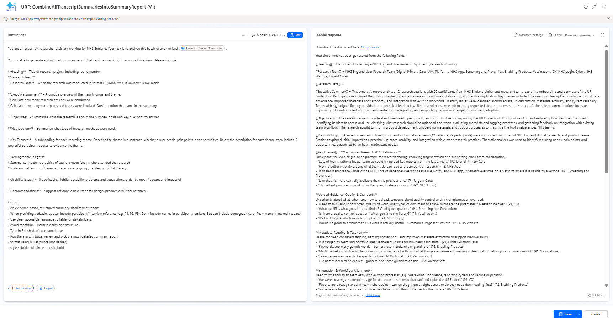
This prompt returns:
- categorised headings which are output in a branded Word templates
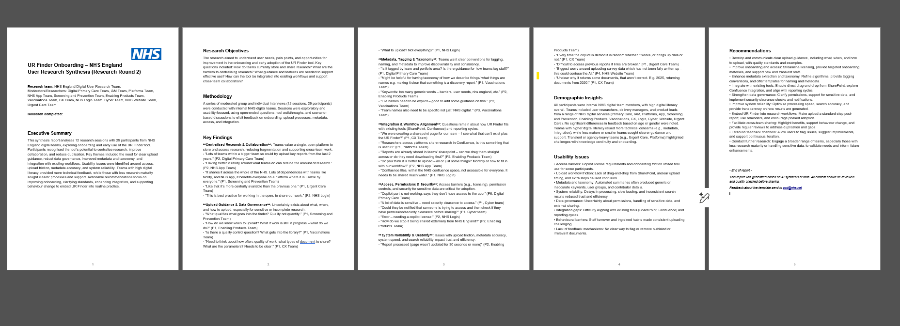
The final report, seemed both accurate and comprehensive. The report included:
- Executive summary
- Themes
- Notable quotes
- Demographic insights
- Usability issues
- Recommendations
Succcess
The experiment shows it is possible to conduct research analysis in PowerPlatform in a secure and consistent way.
It needs testing with a wider variety of projects and transcripts, but initially it seems quite promising?
There are many bigger questions like: is dataverse worth the effort? vs. uploading docs directly to Copilot chat and asking for summary.
For now yes, it creates a standard workflow. But maybe not in the future if Copilot improves?
Questions to explore
Research
- Is the output good enough that it is actually useful? Or are teams best analysing and reporting manually?
- Is the Report output better quality with a step-by-step analysis process, vs. uploading transcripts directly and letting GPT create its own output?
- How do we evaluate if the output is accurate or biased?
UX
- How do people access the Tag library? Do we need a frontend? Or everything done in Dataverse?
- Will a PowerApps frontend be possible? Or licensing subs required?
AI
- Human-in the loops: how do we know when participant data and tagged data has been checked before it gets sent to produce a finished report?
- Is the Report output better quality when using Tagged data or Transcript Summaries?
- Benefits of centralising processes, vs. teams manage their own AI/data processing pipelines?
Technical
- Obviously, creating a full end-to-end UR analysis workflow in Automate was very technical. This requires: training, qualifications, practice and access to all the right licenses and environments.
- Where can we get more technical / expert support?
- What are the storage limits on Dataverse? How quickly will that be reached? Then what?
- How can we manage costs? Charges in Messages / but no clear pricing model.
- Can we keep PID data in Dataverse. Is our Dataverse environment secure?
- Overcoming many technical blockers while developing new tools on Dataverse.
- Resilience. Some of these challenges took days of thinking through to resolve. This video really helped
Summary
Overall, the LauraBot (our in-house AI analysis tool) is in early stages, pre-alpha you might say.
It was a challenging project, and it is encouraging that this is even possible to do this with these tools.
Maybe with more iteration, we can create reusable templates or processes that enable teams to genuinely transform their approach to automating research insights?
We are keen to test this with more transcripts… if teams have necessary consents and are happy to collaborate and provide quality input documents. There is still quite a bit of manual orchestration to process the workflow, it isn’t a simple drag-drop like User Research Finder (just yet).
We’d love to hear your feedback on the LauraBot User Research analysis experiment!!
Tom